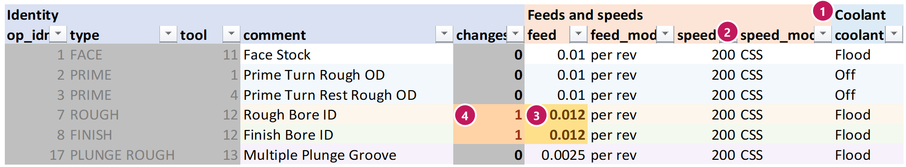

What is in the workbook
What this is for
A map of the workbook the dump makes: which sheet is which, what the colours mean, and where the buttons are. The sheet tabs are along the bottom of the Excel window.
When to use it
The first time you open a dumped workbook, or when a sheet or colour puzzles you.
Steps
- The workbook opens on the Summary sheet: the part's totals.
- Click the Lathe params tab at the bottom: the main sheet, one row per op. This is where you edit.
- Click the Tools tab: one row per tool, with its picture and insert, and the inserts table under it.
- If you ticked Include macros, click the Parameter Table tab on Excel's ribbon (at the top) to see the tools below.
The sheets
| Sheet | What it holds | You type in it? |
|---|---|---|
| Summary | Cycle time, flips, material removed – as dumped and now. A batch quantity and insert cost. The longest ops. | Batch quantity only |
| Lathe params | One row per op: every setting the tool reads. | Yes – the white cells |
| Tools | One row per tool; an inserts table under it. | Insert names, edges, cost, edge life |
| Dumped (hidden) | A copy of every value as dumped. It is how changed cells light up, and how Back to the dump works. | Never |
| Changes | Made by List changes. | No |
| Scenarios | Made by Compare scenarios. | No |
| Program check | Made by Program check. | The Ignore column |
| Change report | Made by Change report. | The Why column |
The colours
| Looks like | Means |
|---|---|
| white | You can type here. |
| yellow | You changed this cell. It differs from the dump. |
| blue | A worked-out number (time, flips, MRR) that moved because of your edits. |
| grey | Read-only, or the setting does not apply to this kind of op. Excel will not take typing here. |
| blue line above and below a row | The op row your cursor is on (with macros), so you do not lose your place on a wide sheet. |
The Parameter Table tab (with macros)
HelpUser manual
Every window these open has a ? button that opens its page in this manual.
The .ptconfig file beside the part
What you type on the Tools page and the Summary (insert names, edges, cost, parts per edge, edge life, batch
quantity) is kept in a small file next to the part, called <part>.ptconfig. The next dump starts
with those values, so you type them once. Delete the file to start over.
Worked example
You type 0.012 over the feed of op 7 (it was 0.01).
| Cell | Before | After |
|---|---|---|
op 7 feed | 0.01 (white) | 0.012 (yellow) |
op 7 changes | 0 | 1 |
op 7 est_cycle_time | 1:44:00 | 1:26:45 (blue) |
| Summary: cycle time, Now | 12:46:38 | 12:29:23 |


changes count for the row.